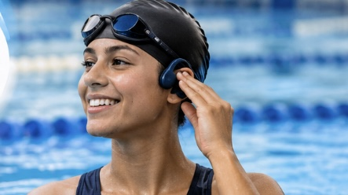
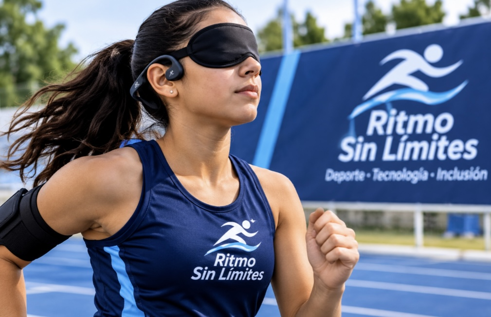
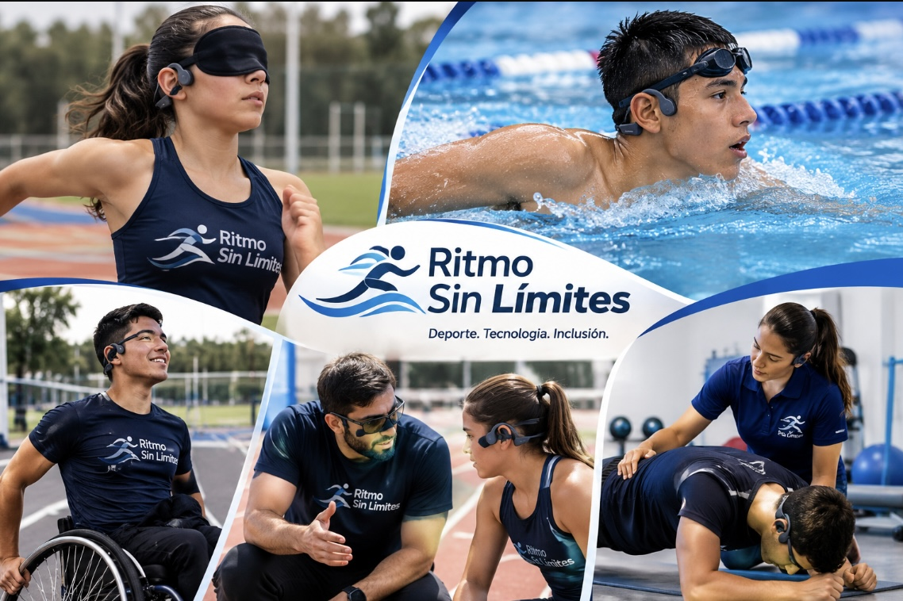

Nuestros Servicios y Disciplinas

Atletismo Adaptado
Entrenamiento de pista y resistencia adaptado a las capacidades de cada deportista.

Natación Inclusiva
Desarrollo técnico en el agua con acompañamiento personalizado y seguro.

Acuatlón
Combinación de carrera y natación fomentando el trabajo en equipo y la superación.

Tecnología de Conducción Ósea
Comunicación directa en tiempo real entre entrenador y deportista durante el ejercicio.

Formación Inclusiva
Espacios compartidos para personas con discapacidad física, intelectual, visual y sin discapacidad.
Entrenamiento Personalizado
Planificación deportiva enfocada en el bienestar, la autonomía y el alto rendimiento.